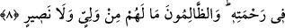

Abdullah b. Amr “peki o zaman amel niyedir?” diye sorunca Peygamberimiz (s.a.):
«–Siz çalışın, doğru olanı ve doğruya daha yakın olanı yapınız. Cennet ehli ne
yaparsa yapsın sonunda cennet ehlinin amelini yapacaktır. Cehennem ehli ne yaparsa
yapsın sonunda cehennem ehlinin amelini yapacaktır. Sonra Peygamberimiz (s.a.):
“bir bölümü cennette, bir bölümü de cehennemdedir” buyurdu.[70]
İşte bu Allah’ın adâletidir. “Doğru olanı yapın ve yaklaşın” ifâdesi; doğruyu
hedefleyin, ifrat ve tefritten sakının, kendinizi ibâdette çok zorlamayın. Zîrâ bu durum
sizde bir bıkkınlık meydana getirir de artık ameli terk edersiniz demektir. İmam
Sahâvî’nin Makàsid-i Hasene’sinde bu açıklama yer almaktadır.[71]
Peygamberimiz (s.a.)’in şu hadis-i şerifi de bunun bir benzeridir: “Elbette bu din
kolaydır ve kolaylık dînidir. Kim dinde bir zorluk çıkarırsa sonunda o kişi yenik
düşer”.[72] Yani din kolay amellere şamil olup dinde zorluk yoktur. Kim ibadetlerde bir
takım külfet, meşakkat ve zorlukları iltizam eder işi zora sokarsa bu gibi zorlukların
üstesinden gelemez ve yenik düşer. Sonuçta çalışıp kazanmak cennet yoludur. Kişi
cennetlik olduğunu bilse de yine de çalışmalıdır.
Kazanmayı da ziraat gibi bil ey amca,
Ekmedikçe mahsul elde edemezsin.
8. Allah dileseydi onları bir tek millet yapardı. Fakat O, dilediğini rahmetine
kavuşturur; zâlimlerin ise hiçbir dostu ve yardımcısı yoktur.
“Allah dileseydi, onları” dünyada hidâyet yahut sapıklık üzere olan bir bölük “bir
tek millet yapardı. Fakat O, dilediğini rahmetine” cennetine “kavuşturur” yahut azap
ve belaya sokar. “Zâlimlerin” müşriklerin “ise” işlerini üstlenecek “hiçbir dostu ve”
azâbı onlardan bertaraf edip onları kurtaracak “yardımcısı yoktur.”
Âyetteki “onlar” zamiri, kendilerine iki bölük olarak işâret edilen tüm insanları ifâde
etmektedir. Tek ümmet, hidâyet yahut sapıklık üzere olan tek bölük yahut tek cemaat
demektir. Bu ifâde, Abdullah b. Abbas (r.a.)’nın “tek din üzere” diye hülâsa ettiği
mânânın daha geniş îzâhıdır.
Allah, istediğini rahmet ve cennetine, istediğini de azap ve cehennemine girdirir.
Şüphesiz bu her iki durumda da Allah Teâlâ’nın irâdesi, iki bölükten her birinin
gireceği yere hak kazanmasına tabidir. Rahmet ve azaptaki zorunlu farklılıktan dolayı
bunlara yani cennet ve cehenneme girenlerin halleri de kesin olarak farklı olacaktır. İşte
bundan dolayı Allah Teâlâ insanların tek bir ümmet olmalarını istememiş bilakis onları
ayrı iki bölük yapmıştır. Zalim müşriklerin işlerini üstlenip onlara faydalı olacak ve